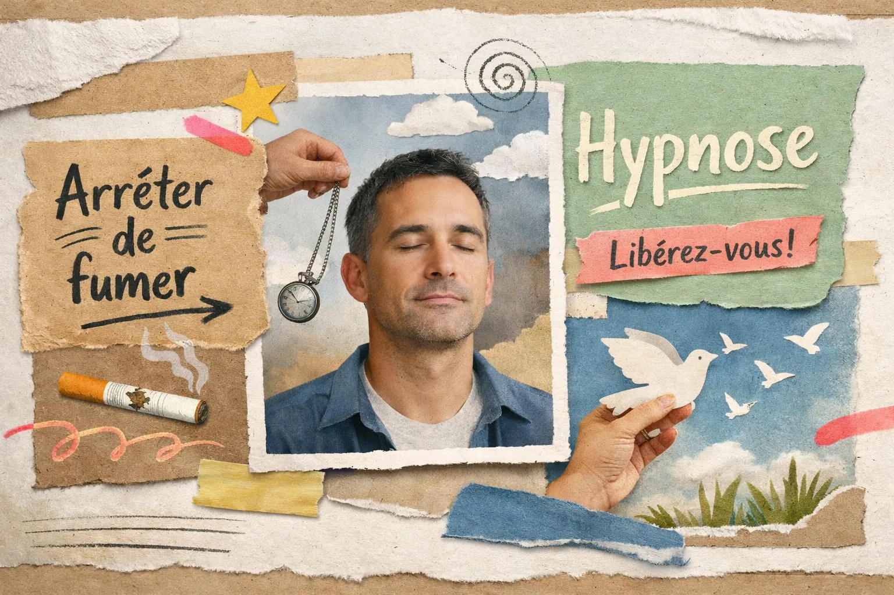

Burn-out à Troyes : Comment le Magnétisme et l'Hypnose Aident à Sortir de l'Épuisement

Vous êtes épuisé à un point que le repos ne suffit plus à combler. Le matin, se lever est un effort. La concentration s'est effondrée. Le moindre imprévu vous submerge. Ce n'est plus du stress — c'est un burn-out.
En 15 ans de cabinet à Saint-Germain, j'ai accompagné de nombreuses personnes en épuisement professionnel. Ce que j'observe : le corps et l'esprit sont tous les deux atteints, et les approches qui n'agissent que sur l'un ou l'autre ont des résultats limités. C'est pourquoi ma méthode combine magnétisme et hypnose ericksonienne — pour agir sur les deux simultanément.
Cette page explique comment et pourquoi cette combinaison fonctionne sur le burn-out — et ce que vous pouvez réellement attendre d'une séance.
Ce que le burn-out fait au corps et à l'esprit
Le burn-out n'est pas de la fatigue ordinaire. C'est un épuisement des ressources adaptatives : le corps et le cerveau ont fonctionné en mode survie trop longtemps, et ils n'arrivent plus à récupérer d'eux-mêmes.
Dimension mentale
- Concentration effondrée
- Pensées en boucle la nuit
- Sentiment d'incompétence
- Perte de sens et de motivation
- Cynisme, détachement
Dimension physique
- Fatigue qui ne passe pas au repos
- Tensions musculaires chroniques
- Troubles du sommeil persistants
- Maux de tête, douleurs diffuses
- Système immunitaire affaibli
Dimension émotionnelle
- Irritabilité disproportionnée
- Pleurs sans raison apparente
- Sentiment d'être piégé
- Isolement relationnel
- Anxiété de fond permanente
Le problème avec le seul repos : il permet au corps de récupérer superficiellement, mais les blocages énergétiques créés par l'épuisement chronique et les schémas mentaux qui ont conduit au burn-out restent intacts. C'est pourquoi beaucoup de personnes rechutent quelques mois après avoir repris le travail.
Comment le magnétisme agit sur le burn-out
Le magnétisme travaille sur la dimension physique et énergétique de l'épuisement. En pratique, voici ce qui se passe pendant une séance :
Relance de la circulation énergétique
Le burn-out crée des blocages dans les zones les plus sollicitées : nuque, épaules, plexus solaire, bas du dos. Le magnétisme libère ces zones, permettant à l'énergie de circuler à nouveau normalement.
Régulation du système nerveux
En état de burn-out, le système nerveux autonome est coincé en mode "alerte". Le magnétisme aide à basculer vers le mode parasympathique (repos et récupération) — ce que le corps a oublié comment faire seul.
Amélioration du sommeil dès les premières séances
C'est souvent le premier effet observé par les patients : un sommeil plus profond et plus récupérateur dans les jours qui suivent la séance. La qualité du sommeil est le premier indicateur de récupération du burn-out.
Comment l'hypnose ericksonienne complète le traitement
Le magnétisme traite les conséquences physiques. L'hypnose ericksonienne s'attaque aux causes inconscientes du burn-out : les croyances, les schémas de pensée et les automatismes qui ont permis à l'épuisement de s'installer sans que vous ne l'ayez vu venir.
En état d'hypnose légère, l'inconscient est accessible. Nous travaillons sur :
- →Les croyances limitantes : "je dois être parfait", "je ne peux pas dire non", "si je m'arrête, tout s'effondre" — ces schémas créent un surmenage chronique invisible.
- →La reconexion aux ressources intérieures : en burn-out, le sentiment de compétence et de valeur personnelle s'est effondré. L'hypnose les restaure depuis l'intérieur.
- →L'installation de nouveaux automatismes : apprendre à l'inconscient à déclencher la récupération plutôt que la surcharge, à reconnaître les signaux d'alerte avant l'effondrement.
L'avantage de la combinaison : dans une seule séance d'1h à 1h30, le corps se relâche grâce au magnétisme (les résistances physiques tombent) puis l'hypnose trouve un accès plus direct à l'inconscient. Les deux techniques se potentialisent mutuellement.
Ce que disent les patients
35 avis Google à 4,9★ — voici deux retours de patients venus pour un épuisement professionnel.
Isabelle M.
Troyes — burn-out professionnel
"J'étais en arrêt depuis 3 mois et je ne récupérais pas. Après deux séances chez Corinne, j'ai retrouvé un sommeil normal pour la première fois depuis plus d'un an. La fatigue était toujours là mais différente — moins écrasante, plus gérable. Je recommande à toute personne en burn-out."
Nicolas R.
Aube — épuisement managérial
"Manager depuis 10 ans, je ne savais plus m'arrêter. Corinne m'a aidé à comprendre pourquoi mon cerveau refusait de déconnecter. L'hypnose a travaillé sur quelque chose de très profond. Après 4 séances, je gérais mon énergie autrement — et j'ai pu reprendre le travail sans rechuter."
Les résultats varient selon les personnes et la profondeur de l'épuisement. Lire tous les avis Google ⭐
Comment se déroule une séance burn-out
Voici le déroulé type d'une séance au cabinet de Saint-Germain :
Échange initial (15 min)
On parle de votre situation : depuis quand, les symptômes dominants, ce que vous avez déjà essayé. Cet échange est essentiel — il oriente le travail de la séance.
Magnétisme (30-40 min)
Allongé, habillé. Les mains se déplacent à quelques centimètres du corps pour localiser et libérer les zones de blocage. Beaucoup de patients ressentent une chaleur ou des picotements dans les zones travaillées.
Hypnose ericksonienne (20-30 min)
Une induction douce, pas de spectacle — vous restez conscient et en contrôle. Le travail porte sur les schémas identifiés en début de séance.
Retour et conseils (10 min)
On fait le point sur ce qui s'est passé pendant la séance et je vous donne des indications simples pour les jours suivants.
1h – 1h30
Durée d'une séance
2 à 6
Séances selon l'épuisement
jours
Délai de RDV
Questions fréquentes
Le magnétisme peut-il vraiment aider en cas de burn-out ?
Le magnétisme agit sur les blocages énergétiques du corps liés à l'épuisement : tensions musculaires, fatigue profonde, système nerveux saturé. Il ne remplace pas un suivi médical ou psychologique, mais il peut accélérer significativement la récupération physique. Associé à l'hypnose, il agit simultanément sur le corps et sur les schémas mentaux qui ont conduit au burn-out.
Combien de séances faut-il pour un burn-out ?
Pour un burn-out récent ou modéré, 2 à 3 séances suffisent souvent à amorcer une récupération nette. Pour un épuisement profond et installé depuis plusieurs mois, un suivi de 4 à 6 séances est recommandé. Chaque séance dure entre 1h et 1h30.
Quelle est la différence entre stress et burn-out dans votre approche ?
Le stress est une réaction ponctuelle — le corps peut récupérer seul avec du repos. Le burn-out est un effondrement complet des ressources : le corps ne sait plus "recharger". Le magnétisme relance la circulation énergétique bloquée, et l'hypnose désactive les mécanismes de surmenage installés inconsciemment.
Peut-on combiner cette approche avec un arrêt de travail ou un suivi médical ?
Oui, et c'est même conseillé. Le magnétisme et l'hypnose sont des approches complémentaires — elles ne remplacent pas un médecin ou un psychologue. Beaucoup de patients en arrêt maladie pour burn-out viennent au cabinet en complément de leur suivi médical.
Acceptez-vous les patients en plein burn-out ou seulement en prévention ?
Les deux. Certains arrivent épuisés, en plein effondrement — c'est souvent là que le magnétisme est le plus utile. D'autres viennent en prévention, quand ils sentent qu'ils approchent des limites. Dans les deux cas, le protocole s'adapte à l'état du patient.
Articles qui pourraient vous intéresser
Vous traversez un burn-out ?
Le cabinet est à Saint-Germain, à 5 minutes de Troyes. Les premières disponibilités sont généralement sous jours. Une séance d'1h30 pour commencer à récupérer autrement.